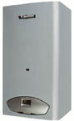
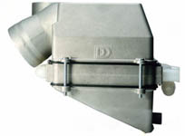
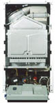
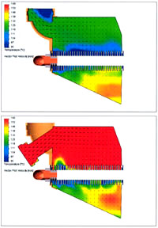
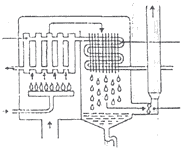

|
DemirDöküm
Genel Müdürü Melih Batýlý, Türkiye'de ilk defa "Yoðuþmalý"
kombi ürettim yaptýklarýný söyledi.
Batýlý, yeni kombinin lansmaný için düzenlenen basýn toplantýsýnda
yaptýðý konuþmada, yeni kombinin internet ortamýnda çalýþtýrýlabileceðini
ve ýsý ayarlarýnýn yapýlabileceðini kaydetti. Batýlý, Türkiye'de
üretilen ilk ve tek yoðuþmalý kombi olma özelliði taþýyan
ürünlerin yarýsýnýn Ýngiltere'ye ihraç edileceðini yarýsýnýn
da iç piyasada satýþa çýkaracaklarýný kaydeti.
Batýlý, lansmaný yapýlan yoðuþmalý kombinin yanma sonucu oluþan
su buharýný sisteme kazandýrmak suretiyle yüzde 15 yakýt tasarrufu
ve yüzde 104 verim saðladýðýný, bunun da enerji kaynaklarý
kýsýtlý bir ülke olan Türkiye'ye bir avantaj saðlayacaðýný
belirtti.
Batýlý, yoðuþmalý kombi ürün fiyatýný yaklaþýk 2.3 milyar
lira olarak belirlediklerini kaydederek, yabancý firmalarýn
ithal ürünlerinin ise 3.5 - 4 milyar lira arasýnda olduðunu
belirtti.
Gelecek yýl toplam kombi satýþlarýnýn 180 bine ulaþabileceðini
söyleyen Batýlý, yoðuþmalý kombi üretiminin yüzde 50'sinin
iç pazara, yüzde 50'sinin ise dýþ pazara satýlacaðýný belirtti.
(Milliyet 03-12-2003)
SARGON
CONDENSE KOMBÝ
DemirDöküm
Sargon Condense kombilerde kullanýlan aluminyum döküm eþanjör
ile atýkgaz çýkýþ sýcaklýðý düþürülerek yanma sonucu oluþan
su buharýnýn sisteme geri kazandýrýlmasý ile yüksek verim
elde edilmektedir. standart kombilerdeki %90-92 seviyelerindeki
verim deðerine karþýlýk Turbo
eþanjörlü kombilerde
düþük sýcaklýkta (50-30°) kullanýmlarda %104 gibi
yüksek verim elde edilmektedir.
Isýtma veriminin artýþýna baðlý olarak, DemirDöküm
Turbo eþanjör sistemli yoðuþmalý kombiler standart kombilere
göre %10 - %15 daha fazla yakýt tasarrufuna
sahiptir.
DemirDöküm Sargon Condense kombilerde diðer
kombilerde oduðu gibi CE, Rostest, ISCIR, MVBTI, UKCERTELEC,
CNACL gibi sertifikalara sahip olup, baþta Ýngiltere,
Rusya, Romanya, Macaristan, Bulgaristan ve Çin olmak üzere
40'a yakýn ülkeye ihraç edilmektedir.
Yeni Turbo Eþanjör Tasarýmý:
Sonlu
elemanlar yöntemi kullanýlarak tasarlanan ve patenti DemirDöküm'e
ait olan turbo eþanjör tasarýmýnýn tüm teknik mühendislik
çalýþmalarý, uzman DemirDöküm mühendisleri tarafýndan gerçekleþtirilmiþtir.
Turbo
eþanjör sistemi ile atýkgaz sýcaklýðý düþürülerek yanma sonucu
oluþan su buharý sisteme geri kazandýrýlmakta ve bunun sayesinde
de yüksek verim elde edilmektedir.
Yoðuþmalý
Kombi Çalýþma Prensibi :
Yanma
olayý, ýsý üreten kimyasal bir reaksiyondur ve oksijen
ile yakýtýn karýþarak belli bir sýcaklýða yükselmesi ile oluþur.
Doðal gazýn yanmasý sonucunda su buharý ve karbondioksit meydana
gelir.
Yanýcý
ürünler duyulur ýsý ve gizli ýsý olarak iki farklý þekilde
enerji içerirler:
Duyulur
ýsý: Bir maddenin fiziki yapýsý ( katý, sývý veya gaz halinde oluþu)
deðiþmezken, sýcaklýðýný deðiþtiren ýsý miktarýdýr.
Gizli
ýsý: Bir maddenin sýcaklýðý
ayný kalýrken fiziki yapýsýný (katý sývý veya gaz halinde
oluþunu) deðiþtiren ýsý miktarýdýr.
Kondenzasyon
tekniði kullanýlan kombilerin standart kombilere göre baþlýca
farký, baca gazý ürünlerindeki nem yoðunlaþtýðýnda ortaya
çýkan buharlaþma gizli ýsýsýnýn bir kýsmýnýn kullanýlabilmesi
ve ýsý geri kazaným kabiliyetleridir. 1 m3 doðalgaz baþýna
1.5 ile 1.7 kg arasýnda su oluþmaktadýr. 1 kg-su baþýna açýða
çýkan buharlaþma ýsýsý 539 kcal'dir. Bu enerji gizli
ýsý olarak anýlmakta ve standart kombilerde bu ýsýdan yararlanýlmamaktadýr.
Yoðuþmalý kombiler; bacadan atýlan gazlarýn içindeki
su buharýnda bulunan enerjiyi, gazlarý yanma bloðunun içinde
tekrar dolaþtýrmak suretiyle özel olarak dizayn edilmiþ kanatçýklara
çarptýrarak alýr ve tesisat suyuna aktarýr.
Yanma
sonucu oluþan ürünler 1.eþanjörden geçerken içersindeki su
buharý yoðunlaþarak, su haline gelir. Yoðuþan
suyun enerjisini de 2. Eþanjörde dolaþmakta olan sistem suyu
alýr. Bu sistemle çalýþan kombilerin verimleri standart kombilerden
daha fazla olmaktadýr. Yoðuþma sonucu oluþan su da, özel bir
tahliye borusu ile dýþarý atýlýr.
DemirDöküm'de
Endüstriyel Tasarým:
Dünya
firmalarý ile rekabet eden DemirDöküm, Endüstriyel Tasarým
alanýnda da ilklerden birini gerçekleþtirmiþtir. Endüstriyel
Tasarým yatýrýmlarýna 1989 yýlýnda baþlayan Demirdöküm, 1996
yýlýndan itibaren Ýstanbul merkez ofis bünyesinde çalýþmalarýný,
dünyadaki en güncel yazýlým ve donanýmlarla sürdüren, Endüstriyel
Tasarým Bölümünü oluþturmuþtur. Tasarým, yeniden tasarým ve
ürün kimliðinin oluþturulmasý grubun ana sorumluluklarýdýr.
Ürün tasarýmý ile estetik, ergonomi ve iþlevsel özelliklerinin
tümü gözönünde bulundurularak çalýþmalar yürütülmektedir.
Ýki ve üç boyutlu çizimler, bilgisayarda modellemeler, fotogerçekçi
resimlerin hazýrlanmasý, hýzlý prototip model çýktýlarý proje
sürecinde önemli yer tutarak, tasarým doðrulama sürecini kýsaltmaktadýr.
Ödül
ve tesciller: ETMK 1998 Designers' Odyssey, Endüstriyel Ürün
Tasarýmý Ödülü, Designex 1999, Mimar Sinan Üniversitesi Endüstriyel
Tasarým Onur Ödülü, Panel radyatör, elektrikli yaðlý radyatör,
bacalý doðal gaz sobasý, kat kaloriferi, þofben, termosifon,
katý yakýt sobasý, fanlý hermetik soba, 15 lt termosifon,
elektrikli þofben, havlu kurutuculu radyatör, kombi, quarts
soba gibi birçok ürüne endüstriyel tasarým tescili alýnmýþtýr.
Daha
Fazla Bilgi için:
www.demirdokum.com.tr/ur_ko_sargon.htm
> DemirDöküm / Sargon Condense Yoðuþmalý Kombi
www.demirdokum.com.tr/ur_ko_isocondens.htm
> DemirDöküm / ISOCONDENS Yoðuþmalý Kombi
www.demirdokum.com.tr/entas.htm
> Demirdöküm / Endüstriyel Tasarým
www.milliyet.com.tr/2003/12/03/ekonomi/eko05.html
> Kombiler internetten yanacak
|